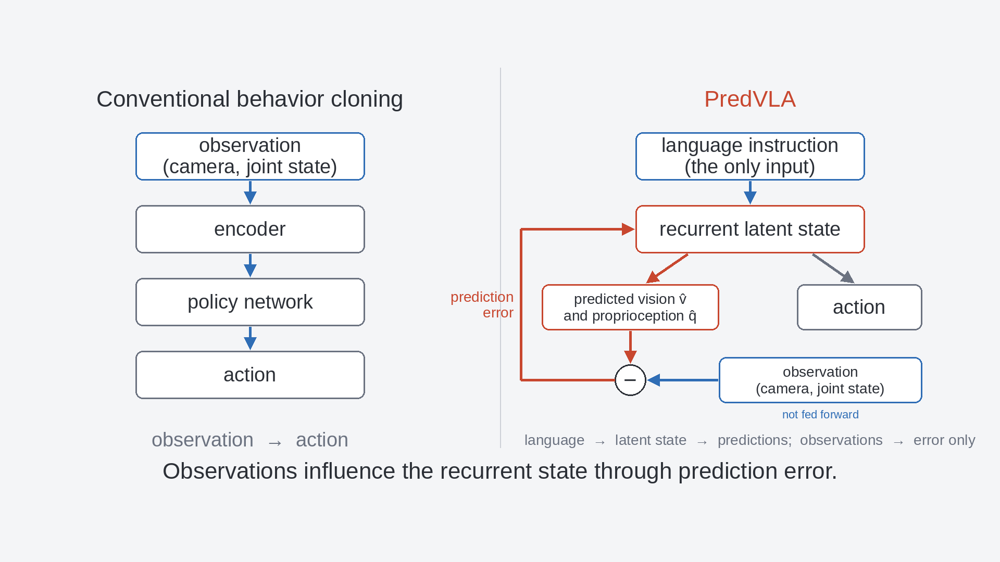
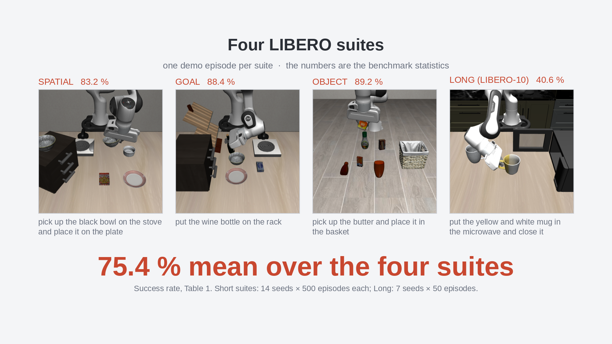
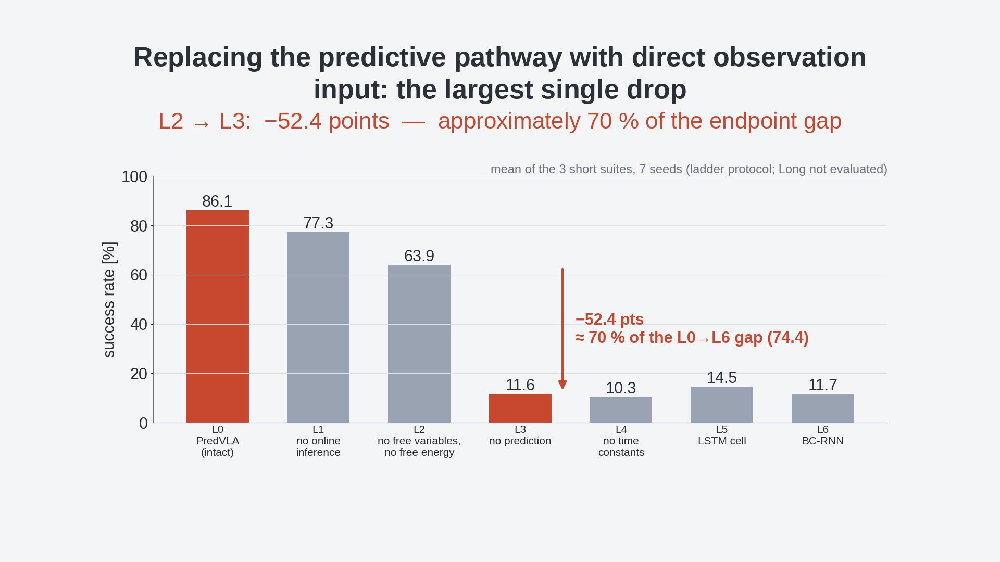

PredVLA: Predictive Sensorimotor Modeling for Sub-Million-Parameter Robot Manipulation
arXiv preprint, August 2026
90-second overview. All footage is closed-loop rollouts of the released checkpoints on LIBERO; all numbers are from the paper.
TL;DR
Compact robot policies can benefit substantially from predictive sensorimotor modeling rather than direct observation-to-action mapping. PredVLA takes only the language instruction as input, predicts its own visual features and proprioception, and lets observations influence its latent state only through prediction error — corrected online by error regression at every control step.
Abstract
Large pretrained vision-language-action models achieve strong robot-manipulation performance, while compact alternatives have largely pursued efficiency by compressing the prevailing observation-to-action paradigm. We investigate whether predictive sensorimotor modeling can make more effective use of a limited parameter budget than direct observation-to-action mapping. We present PredVLA, a language-conditioned predictive-coding policy with only 0.68 million trainable network parameters and no robot-data pretraining. Its hierarchical recurrent dynamics predict visual features and proprioception, while observations influence latent state only through prediction-error-driven online inference. On LIBERO, PredVLA achieves an 86.9% mean success rate across the three short-horizon suites and 75.4% across all four suites. Under a controlled comparison using the same frozen front end, demonstrations, action decoder, and evaluation protocol, PredVLA achieves 3.7x and 7.4x the three-suite mean success rates of parameter-matched Transformer and LSTM behavior-cloning policies, respectively. A mechanism-by-mechanism transition to the recurrent behavior-cloning baseline shows that replacing the predictive pathway with direct observation input produces the largest single performance drop, accounting for approximately 70% of the endpoint gap. Further ablations identify distinct contributions from training-time latent inference, test-time error regression, hierarchical timescales, and sensory prediction-error channels. Together, these results support predictive sensorimotor modeling as a strong inductive bias for compact language-conditioned robot control.
How it differs from behavior cloning

![PredVLA architecture (paper Fig. 1). A language instruction passes through a frozen MiniLM encoder and PCA into a shared top PC-RNN layer T, which drives a Vision PC-RNN and a two-layer Action PC-RNN connected by lateral pathways (PB and A to V). The Vision PC-RNN emits a vision prediction, the Action PC-RNN emits a proprioception prediction and the action (GMM, k=5). Observations (frozen ResNet-18 + PCA image features, proprioception) enter only as prediction errors that propagate back into the network. Inset: in each PC-RNN layer the prior free variable c_p is updated to the posterior c_q from the prediction error, then the state h is recomputed.](fig1_architecture.png)
Results on LIBERO success rate, %
| Policy | Params | Spatial | Goal | Object | Long (LIBERO-10) | Mean (4) |
|---|---|---|---|---|---|---|
| PredVLA | 675,732 | 83.2 | 88.4 | 89.2 | 40.6 | 75.4 |
| BC-Transformer (parameter-matched) | 646,628 | 24.9 | 30.8 | 15.5 | 7.7 | 19.7 |
| BC-RNN / LSTM (parameter-matched) | 674,276 | 15.9 | 16.9 | 2.2 | 6.0 | 10.3 |
PredVLA: 14 seeds × 500 episodes per short suite, 7 seeds × 50 episodes on Long (Table 1). Baselines share the same frozen front end, demonstrations, action decoder and protocol (Table 2); the 4-suite means are computed from the table.

Where does the gain come from? mechanism ladder
Starting from the intact model we remove one mechanism at a time until only a plain BC-RNN remains (three short suites, 7 seeds). Replacing the predictive pathway with direct observation input is the largest single drop — about 70 % of the whole gap between PredVLA and the BC-RNN endpoint.
| Rung | What changes | Mean (3 suites) | Δ vs. previous |
|---|---|---|---|
| L0 | PredVLA (intact) | 86.1 | — |
| L1 | no online inference (same weights, open-loop) | 77.3 | −8.8 |
| L2 | no free variables, no free energy | 63.9 | −13.3 |
| L3 | no prediction: observations fed forward | 11.6 | −52.4 |
| L4 | no time constants (τ = 1) | 10.3 | −1.2 |
| L5 | PV-RNN cell → LSTM | 14.5 | +4.2 |
| L6 | the existing BC-RNN baseline | 11.7 | −2.8 |

Code, checkpoints and reproduction
The GitHub repository contains the training and evaluation code, the released checkpoints (PredVLA for all four suites, the parameter-matched baselines, the mechanism-ladder rungs and the ablations), the frozen feature caches, and the exact evaluation protocol (predvla/protocol.py). A plain git clone followed by bash setup.sh is enough to evaluate the checkpoints. Released under the MIT License.
BibTeX
@article{sawada2026predvla,
title = {PredVLA: Predictive Sensorimotor Modeling for Sub-Million-Parameter Robot Manipulation},
author = {Sawada, Hiroki and Kasahara, Shunichi},
journal = {arXiv preprint arXiv:2608.26673},
year = {2026},
url = {https://arxiv.org/abs/2608.26673}
}